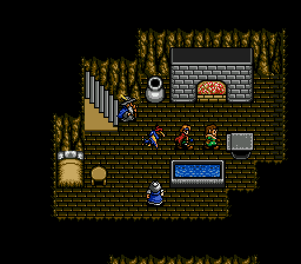
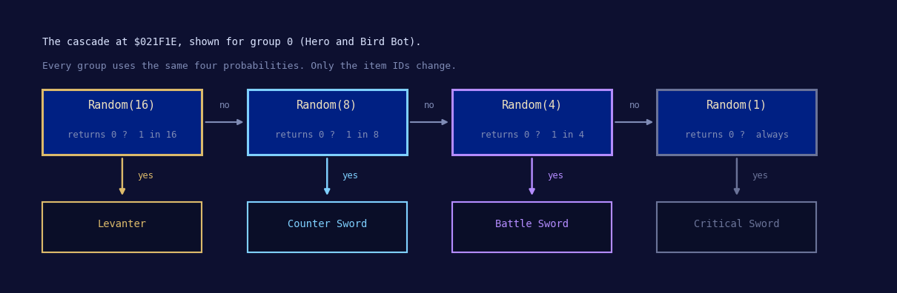
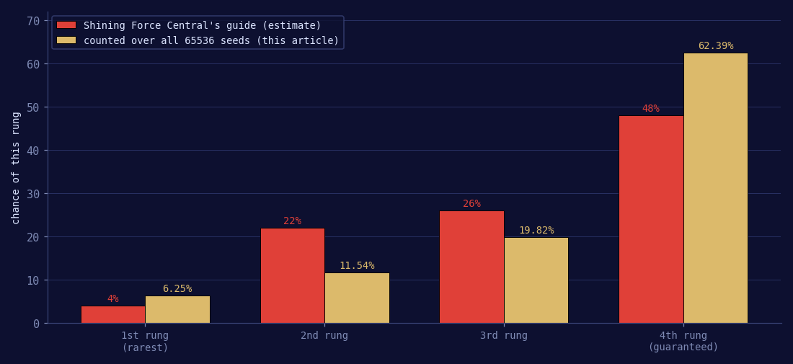
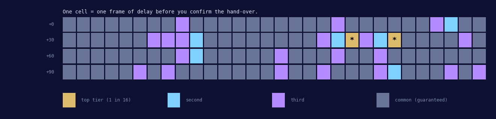
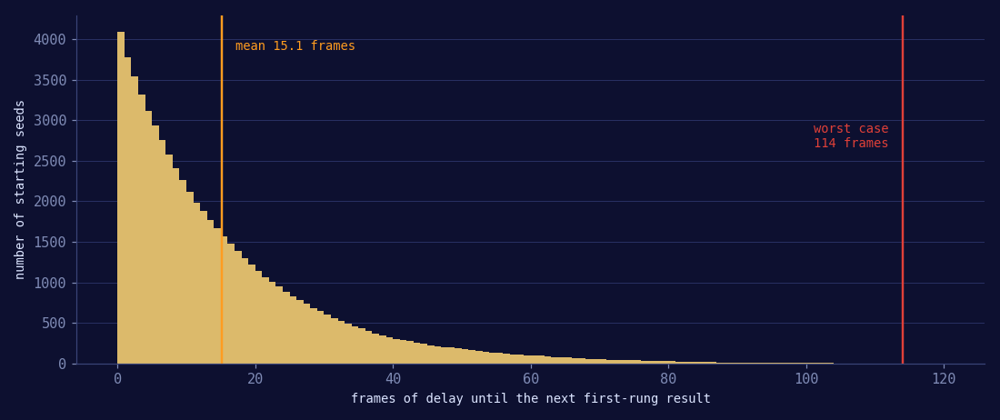

Home › Shining Force II › The mithril RNG
Shining Force II — The Mithril RNG
How the dwarf smith really picks your weapon

The short version
The dwarf does not roll once. He rolls up to four times, down a ladder of four weapons chosen by the recipient's class, and stops at the first roll that comes up zero. The four rungs are 1 in 16, 1 in 8, 1 in 4 and certainty, which works out at 6.25 percent for the best weapon and 62.39 percent for the worst. The odds you have read elsewhere, 48 / 26 / 22 / 4, are not just wrong, they are upside down.
The whole thing is decided the instant you hand the mithril over. Collecting the
weapon later is a table lookup, and what you are going to get is already sitting in
work RAM at $FFF7A8 where you can read it. The seed advances one step per
frame while the smith's text box waits for a button, so the frame you press on decides
the weapon — which is what makes this exploitable rather than merely
interesting.
What everybody knows
Somewhere past the middle of Shining Force II there is a hidden village of dwarves, and in that village there is a smith who will take a lump of mithril off your hands and turn it into a weapon. Mithril is scarce, the weapons he can make are among the best in the game, and he decides which one you get without asking your opinion.
The received wisdom about this, repeated in guides and forum threads for something like thirty years, is roughly: the outcome is random, the split is about 48 / 26 / 22 / 4 with the rarest weapon being the one nobody wants, and you can lean on it by walking a certain number of steps between handing the mithril over and coming back for it. It is not superstition. But almost every detail of it is wrong.
The generator
Shining Force II carries three random number generators. The one that matters for
mithril lives at ROM $001600. It is a sixteen-bit linear congruential
generator whose entire state is one word of work RAM at $FFDEA4.
001600 move.w ($FFDEA4).l,d7 ; the current seed 001606 mulu.w #13,d7 00160A addi.w #7,d7 00160E andi.l #$FFFF,d7 001614 move.w d7,($FFDEA4).l ; the seed advances BEFORE it is used 00161A move.w d6,-(sp) 00161C add.w d6,d6 ; d6 = 2 * range 00161E mulu.w d6,d7 ; 32-bit product 001620 swap d7 ; keep the high word 001622 move.w (sp)+,d6 001624 lsr.w #1,d7 ; result: 0 .. range-1 001626 rts
In arithmetic, with the seed called s and the caller's range in
d6:
s ← (13 * s + 7) mod 65536 value = floor( s * range / 65536 )
Three properties of it decide everything that follows, and all three can be checked by exhaustion rather than taken on faith.
Its period is exactly 65536. It walks through every single sixteen-bit value before it repeats, which it has to: the Hull-Dobell conditions hold, because 7 is odd and therefore coprime with 65536, and 13 minus 1 is 12, which is divisible by 4. There is no short cycle to fall into and no seed that traps you.
Its output is uniform. Over one full cycle, with a range of 4 or 16 or 32, every result comes up exactly the same number of times, and with a range of 100 the most and least common differ by one. Nothing is structurally unlucky.
And the result is a pure function of the seed. Not of the clock, not of the character, not of how many mithril you have handed over before. Know the seed and you know the answer. That single fact is the hook the rest of this article hangs on.
Where the weapon is chosen
The routine is at ROM $021EDA. It is ordinary 68000 code, not a script
command, which is why searching the ROM for the item ID of a mithril weapon never turns
it up — the IDs live in a packed data table, not as immediate operands.
It runs in two halves. The first looks up the recipient's class and turns it into a group number. The second walks four entries of that group and stops at the first roll that returns zero.
021EDA clr.w d0 021EDC lea $21F62(pc),a0 ; class -> group table 021EE0 move.w #7,d7 ; eight groups 021EE4 move.w (a0)+,d6 ; how many classes in this group 021EE6 subq.w #1,d6 021EE8 move.w (a0)+,d1 021EEA move.w -$18(a6),d2 ; the recipient's class 021EEE cmp.w d1,d2 021EF0 beq.w $21F16 ; found it, d0 = group index 021EF4 dbra d6,$21EE8 021EF8 addi.w #1,d0 021EFC dbra d7,$21EE4 021F00 clr.w d0 ; class not listed anywhere: 021F02 move.w #2,d6 021F06 jsr $1600.w ; flip a coin 021F0A cmpi.w #0,d7 021F0E bne.w $21F16 ; 1 -> group 0 (swords) 021F12 move.w #2,d0 ; 0 -> group 2 (axes) 021F16 lsl.w #3,d0 ; eight bytes per group 021F18 lea $21F92(pc),a0 ; weapon table 021F1C adda.w d0,a0 021F1E move.w #3,d5 ; four attempts, and no more 021F22 clr.w d0 021F24 clr.w d1 021F26 move.b (a0)+,d0 ; probability parameter 021F28 move.b (a0)+,d1 ; item ID 021F2A move.w d0,d6 021F2C jsr $1600.w ; the roll 021F30 cmpi.w #0,d7 021F34 beq.w $21F3C ; zero -> you get this one 021F38 dbra d5,$21F22 ; otherwise try the next entry 021F3C lea $F7A8.w,a0 ; queue of weapons being forged 021F40 move.w #3,d7 021F44 cmpi.w #0,(a0) 021F48 bne.w $21F52 021F4C move.w d1,(a0) ; park the item ID here 021F4E bra.w $21F5C 021F52 move.w #2,d0 021F56 adda.w d0,a0 021F58 dbra d7,$21F44 021F5C movem.l (sp)+,d0-d7/a0 021F60 rts
The last entry of every group carries the probability parameter 1, and
Random(1) can only ever return 0. So the fourth rung is not a roll at all
— it is the floor. You always walk out with something.
Step one: your class picks the shortlist
The table at $021F62 is a list of eight groups. Each starts with a count
and is followed by that many class IDs. It comes to thirteen classes across the eight
groups and ends at $021F8C. The four-letter labels are the game's own,
lifted from the class name table at $017F3E, so the fastest way to find a
character's group is to open their status page and read the class field.
| Group | Classes | 6.25% | 11.54% | 19.82% | 62.39% |
|---|---|---|---|---|---|
| 0 | HERO, BDBT | Levanter | Counter Sword | Battle Sword | Critical Sword |
| 1 | PLDN, PGNT | Holy Lance | Halberd | Mist Javelin | Valkyrie |
| 2 | GLDT | Rune Axe | Ground Axe | Atlas Axe | Heat Axe |
| 3 | WIZ, SORC | Mystery Staff | Freeze Staff | Great Rod | Supply Staff |
| 4 | VICR | Mystery Staff | Goddess Staff | Great Rod | Holy Staff |
| 5 | SNIP, BRGN, BWNT | Grand Cannon | Grand Cannon | Hyper Cannon | Buster Shot |
| 6 | NINJ | Gisarme | Ninja Katana | Katana | Critical Sword |
| 7 | MMNK | Giant Knuckles | Giant Knuckles | Misty Knuckles | Misty Knuckles |
Two of those rows are not what they look like. Group 5 lists the Grand Cannon twice, so a Sniper, a Brass Gunner or a Bow Knight gets it on either of the first two rungs — 17.79 percent rather than 6.25. Group 7 has only two distinct weapons in four slots, so a Master Monk has no four-step ladder at all: Giant Knuckles 17.79 percent, Misty Knuckles 82.21 percent, and nothing else is possible.
Then there is the branch nobody talks about. Thirteen classes are listed. Every other
class in the game falls through the whole loop to $021F00 and gets a coin
flip between group 0 and group 2 — the Hero's swords or the Gladiator's axes. That
covers every unpromoted character, and among the promoted classes it covers BRN, WFBR
and PHNX. Hand your mithril to one of those and the game will happily forge a weapon
they cannot hold.
Step two: four rolls down a ladder

The weapon table at $021F92 is eight bytes per group, four pairs of
(probability, item ID). Here it is verbatim:
021F92 10 45 08 44 04 42 01 41 group 0
021F9A 10 51 08 53 04 52 01 50 group 1
021FA2 10 2B 08 2A 04 29 01 28 group 2
021FAA 10 64 08 62 04 5F 01 60 group 3
021FB2 10 64 08 63 04 5F 01 61 group 4
021FBA 10 36 08 36 04 35 01 34 group 5
021FC2 10 6D 08 6C 04 6B 01 41 group 6
021FCA 10 1F 08 1F 04 1E 01 1E group 7
^^ ^^
| the item ID, indexing the table at $01788D
the argument handed to Random()
The regularity is the giveaway. 10 08 04 01 in every single row. Whoever
wrote this wanted one dial per group and turned it the same way eight times.
The odds, and why the guides are wrong
Multiply the rungs out and you get 6.25, then 11.72, then 20.51, then 61.52 percent. But those are the numbers you would get from four independent coin flips, and these rolls are not independent — they come from consecutive steps of the same generator, which correlates them slightly. So rather than trust the arithmetic I walked all 65536 possible seeds through the routine and counted.

- Top tier
- 6.2500 percent
- Second
- 11.5387 percent
- Third
- 19.8227 percent
- Fourth
- 62.3886 percent, and it can never fail
So the Levanter is not a 48 percent outcome and the Critical Sword is not a 4 percent one. It is the other way round, and by a wide margin. If you have ever handed over four mithril and walked away with four Critical Swords, nothing was wrong with your luck. That is the expected result: the chance of getting no top-tier weapon at all out of four mithril is a little over 77 percent.
The weapon is already in memory before you collect it
The tail of the routine, from $021F3C, walks a queue of four words at
$FFF7A8 and drops the item ID into the first empty slot.
That is the smith's work order, and it is written the moment you hand the mithril over.
The lottery is over before he finishes his sentence. Coming back later, walking a lap of
the village, saving and reloading in between — none of it can change anything,
because there is nothing left to decide.
Which also makes the whole thing falsifiable, and that is the useful part. I ran the
ROM with the calls at $001600 instrumented, on a savestate taken the instant
after the mithril changed hands. The log came back with exactly four entries, all from
the call site at $021F2C:
seed $44BE Random(16) -> 7 miss seed $7DAD Random( 8) -> 3 miss seed $61D0 Random( 4) -> 3 miss seed $F797 Random( 1) -> 0 hit
Each seed is the previous one advanced by one step, so the chain is intact. Three
misses and then the floor. Four rolls and no coin flip means the class was one of the
thirteen in the table, and the word at $FFF7A8 in that savestate reads
$001E, which is Misty Knuckles — the fourth entry of group 7, and the
only group it can be. So the recipient was a Master Monk. Predicted from the ROM,
confirmed in RAM, and confirmed again when the player collected the weapon.
Two more savestates line up the same way. One taken before speaking to the smith
holds $0042, a Battle Sword already on order. One taken after collection
holds $0000, the queue empty again.
So why does walking around seem to work
Because of what the seed does while you are reading. At ROM $006470 is
the loop that waits for you to press a button to advance a text box:
006470 moveq #$14,d2 006472 movem.l d6-d7,-(sp) <-- top of the loop 006476 move.w #$100,d6 00647A bsr.w $1600 ; the seed advances HERE, once per frame 00647E move.b d7,($DFB0).w ; and reseeds the second generator 006482 movem.l (sp)+,d6-d7 006486 bsr.b $64A8 006488 bsr.w $0EEE ; wait for vblank 00648C move.b ($DE9B).w,d1 ; read the pad 006490 andi.b #$7F,d1 006494 beq.b $6472 <-- nothing pressed, go round again
One trip round that loop is one frame and one advance of the seed. Every frame a text box sits on screen waiting for you, the generator moves.
Walking barely touches it. I measured that directly, by loading a savestate in a
headless emulator, holding a direction and reading $FFDEA4 at known frames:
the seed advanced 2 steps over 60 frames of walking and 3 more over the next 80. That is
one step every 28 frames, against one step every single frame inside a text box.
Which explains the folklore exactly. Steps never mattered. What mattered was that walking a different route changed when you arrived at the smith's dialogue and how many frames of text went past before the roll. The step count was a clumsy proxy for a frame count, and that is why the trick works for the person who discovers it and falls apart for everyone who copies it.
Getting the best weapon every single time
The result is a pure function of the seed, and the seed advances one step per frame while the smith's text box waits for you. Therefore the frame on which you press the button decides which weapon you get, and pressing one frame later gives a different, entirely repeatable result. That turns save-scumming from a gamble into arithmetic.

You want an emulator with savestates and a RAM watch. BlastEm, Exodus, Gens KMod and Regen all qualify.
- Go through the dialogue until you are one button press away from the smith taking the mithril. That press is the one that runs the routine. Save a state right there.
- Press. As soon as he tells you to come back later, read the word at
$FFF7A8in the RAM watch. That is your weapon, and you have not walked a single step yet. - If it is not the one you wanted, load the state and press one frame later. One frame of delay is one step of the seed, so the outcome changes, and it changes the same way every time you repeat it.
- Repeat until
$FFF7A8holds the ID you want, then walk away and collect it. Nothing after this point can change the result.
How long that takes has a hard answer. Walking the generator's entire orbit and measuring the gaps between top-tier seeds: the average wait is 15 frames and the worst case anywhere on the orbit is 114 frames. There is no seed from which the best weapon is unreachable, and no run of bad luck longer than about two seconds of held breath.

If you would rather compute than reload, put the watch on $FFDEA4
instead, note the value while the text box is open, and let the script work out how many
frames to wait. It carries both ROM tables, reimplements the generator instruction by
instruction, prints the exhaustive odds for any group with --odds, and needs
nothing but Python 3.
$ python3 sf2-mithril.py 0x44BE MMNK
seed $44BE class MMNK group 7
what happens right now
seed $44BE Random(16) -> 7 Giant Knuckles
seed $7DAD Random( 8) -> 3 Giant Knuckles
seed $61D0 Random( 4) -> 3 Misty Knuckles
seed $F797 Random( 1) -> 0 Misty Knuckles <-- taken
result: Misty Knuckles
wait 27 frame(s) longer before confirming to get Giant Knuckles.
One thing to settle before you touch the frame counter: pick the recipient deliberately, because the class fixes the shortlist before any roll happens. Handing mithril to a Master Monk caps you at Giant Knuckles however perfect your timing is, and handing it to an unpromoted character throws away half the outcome on a coin flip between swords and axes. Promote first, then hand over.
On original hardware none of this is available. You cannot count frames by eye and
you cannot read $FFF7A8. Blind save-scumming still works, but it is blind,
and at 6.25 percent it will take a while.
The debug hook they left in
Of the other two generators, the second is unremarkable — it sits at
$001652 with its seed at $FFDFB0, runs
seed = seed * 541 + 12345, and is wrapped at $001628 with
rejection sampling to clean up ranges that are not powers of two. The third, at
$001674, is the interesting one:
001674 movem.l d6-d7,-(sp) 001678 move.w d0,d6 00167A tst.b ($FFB0A9).l ; debug flag 001680 beq.b $16B2 ; zero -> fall through to the real generator 001682 moveq #0,d0 001684 btst.b #3,($DE97).w ; a direction on the pad -> return 0 00168A bne.w $16B8 00168E moveq #1,d0 001690 btst.b #0,($DE97).w ; -> return 1 001696 bne.w $16B8 00169A moveq #2,d0 00169C btst.b #2,($DE97).w ; -> return 2 0016A2 bne.w $16B8 0016A6 moveq #3,d0 0016A8 btst.b #1,($DE97).w ; -> return 3 0016AE bne.w $16B8 0016B2 bsr.w $1600 ; nothing held, or flag clear: roll for real 0016B6 move.w d7,d0 0016B8 movem.l (sp)+,d6-d7 0016BC rts
Set $FFB0A9 to anything but zero and the random numbers stop being
random: four directions on the D-pad map to four fixed values from 0 to 3. All 26 calls
to this wrapper sit between $009FC0 and $00C2B8, which is
battle code — criticals, double attacks, damage variance. Somebody at Sonic!
Software Planning could hold a direction and choose the outcome of every roll in a fight.
It is not the road to mithril, but it is worth knowing it is still in the cartridge.
How this was done
The subject is Shining Force II (USA), 2 097 152 bytes,
MD5 6473b1505334ef5620d13191c18251fe. Every address quoted above is an
offset into that file. It was disassembled with Capstone in Motorola 68000 mode and read
by hand, which found the generator quickly and the choice routine slowly — the
useful search is not for item IDs but for the shape of a table, a run of bytes
alternating small powers of two with values in the item-ID range. Once
10 xx 08 xx 04 xx 01 xx turned up eight times in a row at
$021F92, the rest fell out.
Confirming it needed live data. The ROM was patched so that every call to
$001600 wrote its return address, its range argument and the seed before and
after into a ring buffer in unused work RAM. Gens savestates were converted into Genesis
Plus GX savestates so a headless build of the core could run them, which is where the
four logged rolls and the walking measurement came from. The probabilities and the wait
times were computed by brute force over the full 65536-seed space rather than sampled.
Everything here is reproducible with a copy of the ROM, Python, and any emulator with a RAM watch. If you check it and something does not match, please say so.
Questions people actually ask
What are the real odds of the best mithril weapon?
6.25 percent. The four entries in a group come out at 6.2500, 11.5387, 19.8227 and 62.3886 percent, counted over every possible seed. The 48 / 26 / 22 / 4 figure that circulates is wrong, and it has the ladder upside down.
Does walking a set number of steps work?
No, and it never did. The weapon is decided when you hand the mithril over, so anything you do afterwards is too late. What the old trick was groping at is the frame count inside the smith's text boxes, where the seed advances once per frame. Walking barely moves it, about one step every 28 frames.
Can I see what I am getting before I collect it?
Yes. Read the word at $FFF7A8 in a RAM watch as soon as you have handed
the mithril over. It is the item ID of the weapon being forged, and there are four
slots in case you have more than one on order.
Does it matter who receives the weapon?
Enormously. The class picks the group before any roll happens. Master Monk can only ever produce Giant Knuckles or Misty Knuckles, Sniper and Brass Gunner and Bow Knight get the Grand Cannon on two rungs instead of one, and any class outside the table — every unpromoted character, plus BRN, WFBR and PHNX — gets a coin flip between the Hero swords and the Gladiator axes.
Can I guarantee the top-tier weapon?
In an emulator, yes. Save a state on the frame before you press, press, read
$FFF7A8, then reload and press one frame later if it is wrong. The best
weapon is never more than 114 frames of delay away and is 15 away on average. On
original hardware there is no way to count frames, so no.
Written August 2026. The first Shining Force has no mithril smith, but it has a room of its own here with a romhack in it. No ROMs are hosted on this site.